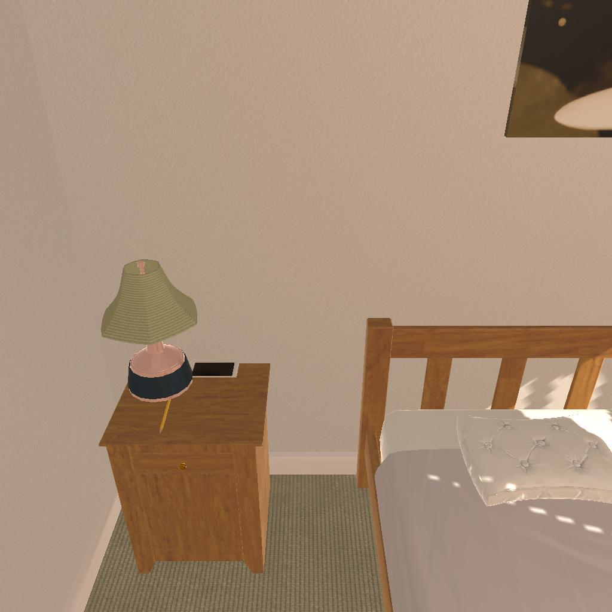

---------------------------------------------------------task: 0---------------------------------------------------------
--------------------------------------------------------------------------------------------------------------------------------------------------------------------
--------------------------------------------------------------------------------------------------------------------------------------------------------------------
Step:--------------------------------------------------------------------------0-------------------------------------------------------------------------------
----------------------------------------
VLM Prompt:
Image1:
**Instruction**
1. Analyze the provided images to identify all visible household objects and compare the difference between images (e.h. whether the object is opened or not and taken on hand or not), focusing on those relevant to the task description "look at alarmclock under the desklamp."
2. Use the analysis of images and the task hint "The agent must find an object of the desired type, locate and turn on a light source with the desired object in-hand." to answer the question: what is the most reasonable action in the choices for the task description "look at alarmclock under the desklamp"?
3. Decide and write the answer using the template: The answer is: (i): , where i is the real number. If there is no desired object in images, search every place based on **Initial Observation** to find the object. And if no one is exactly correct, choose a similar answer.
**Initial Observation**
You are in the middle of a room. Looking quickly around you, you can see bed (1), sidetable (1), drawer (1-11), dresser (1), safe (1), laundryhamper (1), garbagecan (1)
**Answer Choices**
(1): go to bed 1
(2): go to sidetable 1
(3): go to drawer 1
(4): go to dresser 1
(5): go to drawer 2
(6): go to drawer 3
(7): go to drawer 4
(8): go to drawer 5
(9): go to drawer 6
(10): go to drawer 7
(11): go to drawer 8
(12): go to drawer 9
(13): go to drawer 10
(14): go to drawer 11
(15): go to safe 1
(16): go to laundryhamper 1
(17): go to garbagecan 1
**Answer**
Let's think step by step by following the instructions.
----------------------------------------
----------------------------------------
Original Response:
Image Analysis:
- The image shows a bed with a sidetable next to it.
- On the sidetable, there is a desklamp with a lampshade.
- Under the desklamp, there appears to be an alarm clock which is not very clear due to the angle of the image, but it is reasonable to assume it's an alarm clock based on the task description.
- No other objects are visible in the image that are relevant to the task description.
Task Hint Analysis:
- The agent needs to find an alarm clock and turn on a light source with the alarm clock in hand.
- The desklamp is the light source mentioned in the task description.
- The alarm clock is assumed to be under the desklamp as per the task description.
Most Reasonable Action:
- The agent should go to the sidetable where the desklamp and the alarm clock are located.
- Turning on the desklamp would be necessary to look at the alarm clock under adequate light.
- Since the alarm clock is assumed to be under the desklamp, the agent does not need to search other places based on the initial observation.
The answer is: (2): go to sidetable 1.
----------------------------------------
----------------------------------------
>>> Refine Original VLM Response and Get Pure Action: go to sidetable 1
----------------------------------------
-----------------------------------------------------------------
Running time: 92.05164456367493 seconds
Total Money: 0.01932
-----------------------------------------------------------------
-----------------------------------------------------------------
Text Observation:You arrive at loc 1. On the sidetable 1, you see a pillow 1, a desklamp 1, a cellphone 1, and a pencil 1.
-----------------------------------------------------------------
UNSUCCEED